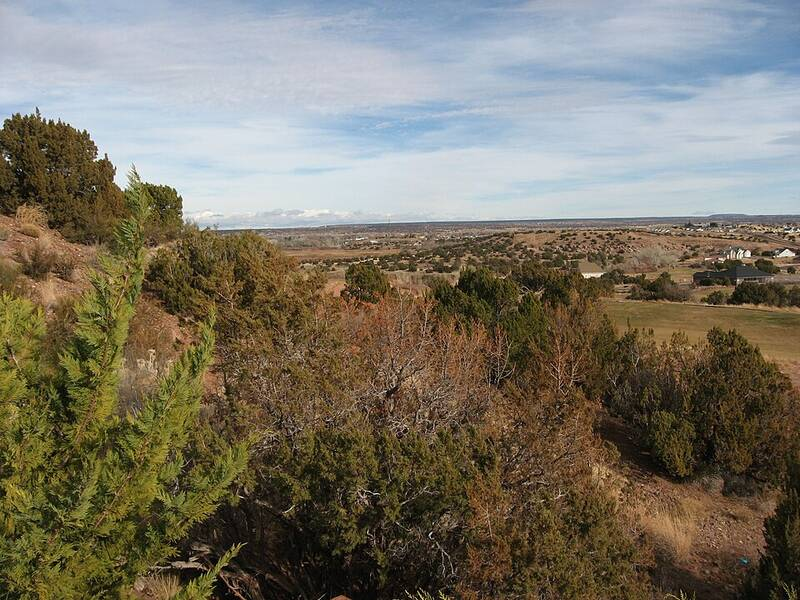

Travis Walton case
Arizona, November 1975

On November 5, 1975, logger Travis Walton disappeared near Heber, Arizona, after his crew said a beam from a hovering craft struck him. He turned up five days later. The account inspired the film Fire in the Sky. 1
Open in the interactive Watcher
Related
Sources
- Travis Walton incident Wikipedia